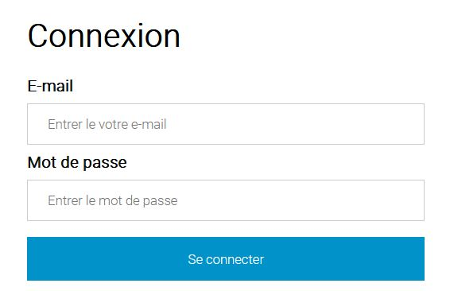
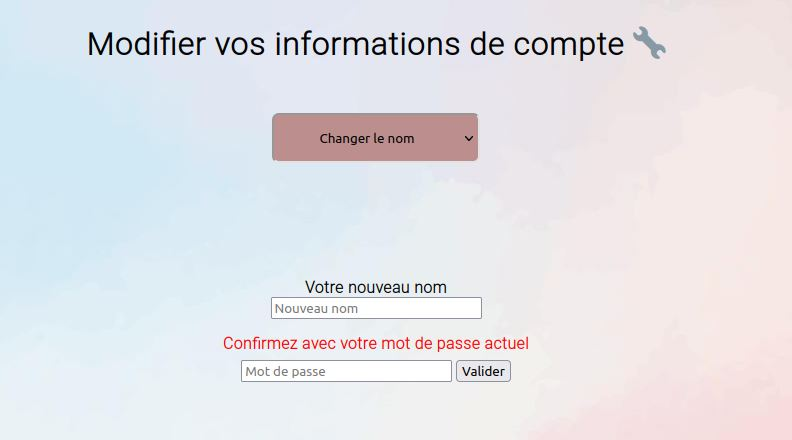
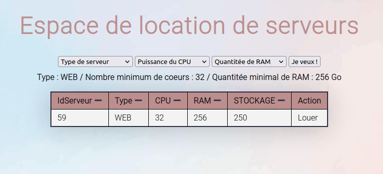
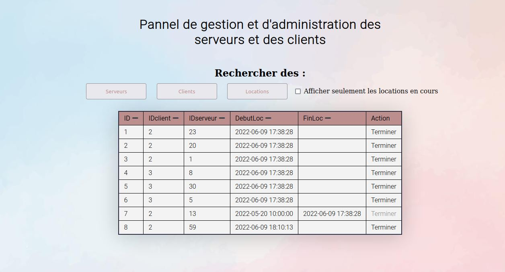
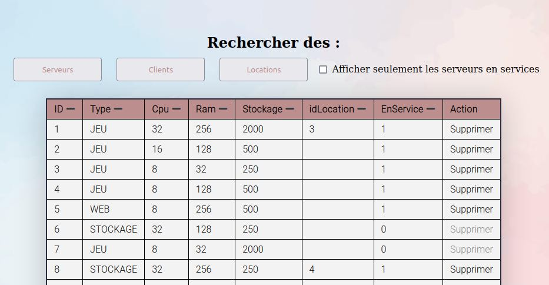

Présentation de notre projet 'Multicast'

Introduction :
Présentation des fonctionnalités (Comptes) :
L'inscription :

~ En back-end ~
Une requête SQL va automatiquement se faire en PHP pour insérer le nouvel utilisateur dans la base de donnée. Le mot de passe est automatiquement hashé en SHA-1 pour la sécurité.
La connexion :
Une fois le compte créé, l'utilisateur peut naturellement se connecter sur le site via la page dédiée.

~ En back-end ~

~ En back-end ~
Cela modifie automatiquement les données associées à chaque utilisateur. Les saisies sont filtrées pour éviter diverses injections SQL et ainsi les failles de sécurité.
Remarques : Tout ce qui est supprimé, que ce soit les utilisateurs, les serveurs... restent dans la base de données avec une valeur nulle à l'élément 'Actif' pour pouvoir garder un historique de chaque actions et une certaine harmonie de la base de donnée.
Présentation des fonctionnalitées (Location) :
La location de serveur :
Il est possible au visiteur une fois inscrit, d'accéder à un espace de location où il peut chercher en temps réel, par rapport à la disponibilité des serveurs et à ses besoins, la liste des serveurs louables en fonction de leurs caractéristiques.

Il peut alors choisir le serveur qui lui plait, puis d'un clic, le louer. Il lui sera alors attribué et ne pourra plus être loué par d'autres personnes.
~ En back-end ~
Lorsque l'utilisateur clique sur le bouton "Louer", le serveur choisi est automatiquement relié à l'utilisateur via un IDutilisateur. C'est comme ça qu'il se démarque des autres serveurs libres (avec un IDutilisateur nul).
La gestion des serveurs loués :
Une fois que l'utilisateur a louer ses différents serveurs, il a accès à une nouvelle page où il peut voir le récapitulatif des différents serveurs qu'il a pris, également la date de location, les spécificitées mais également les rendre (ce qui rendra à nouveau possible la possibilité de louer ce dit serveur).

Il est possible de trier par ordre dé/croissant chaque options ainsi que d'activer la fonction qui permet d'afficher uniquement les locations en cours. Les autres serveurs sont présents comme d'un historique de ses anciennes transactions.
~ En back-end ~
Présentation des fonctionnalitées d'admninistration :
La gestion des serveurs loués :
Lorsqu'on se connecte avec un compte spécialement prévu pour l'administration (admin en l'occurence), la page débloque un nouvel onglet accessible uniquement pour cet utilisateur et qui lui permet de gérer toutes les informations lié aux serveurs ainsi que les utilisateurs.

L'administrateur peut gérer sur cette page :
-
~ Les serveurs : Cela implique d'afficher l'entiéreté des serveurs disponibles ou non (Il y a également un historique des serveurs supprimés) mais également la présence d'un bouton 'Supprimer' qui sert à retirer de la base de donnée (Tout en gardant une trace) un serveur pour qu'il ne soit plus disponible à la location.
Aperçu :

Aperçu :

-
~ Les locations : Finalement dans cette section se trouve tout les serveurs qui sont ou ont étés loués. C'est pratique pour avoir une vue d'ensemble de l'activité des serveurs. Il y a un bouton 'Terminer' qui permet lui d'arrêter la location d'un serveur.
Aperçu :

☁️ Projet Multicast ~ Elouan FIORRE, Timothée FULOP, Luigi MORETTI ☁️